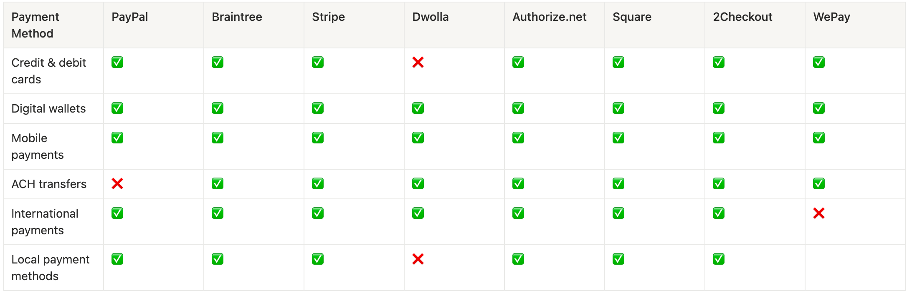
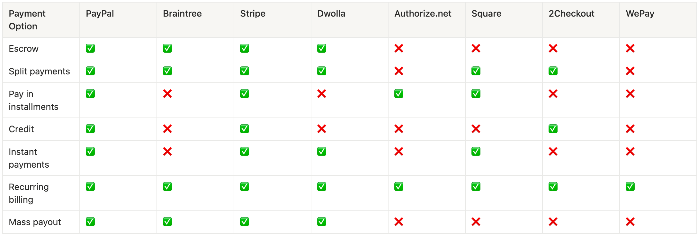
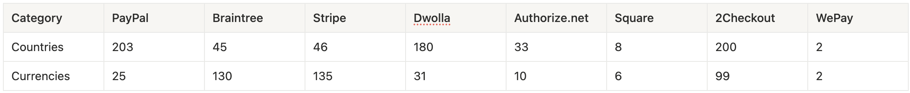
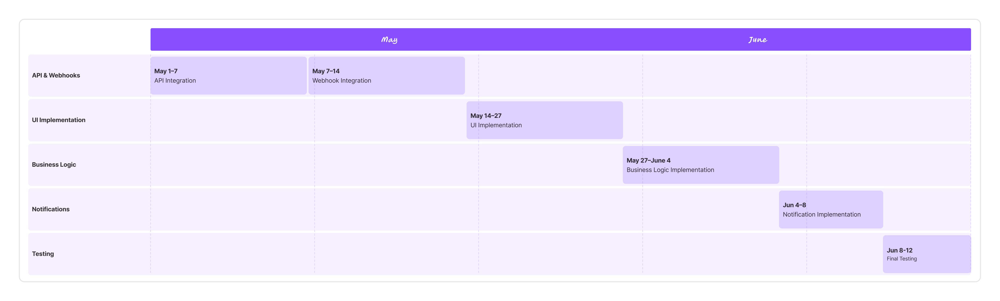
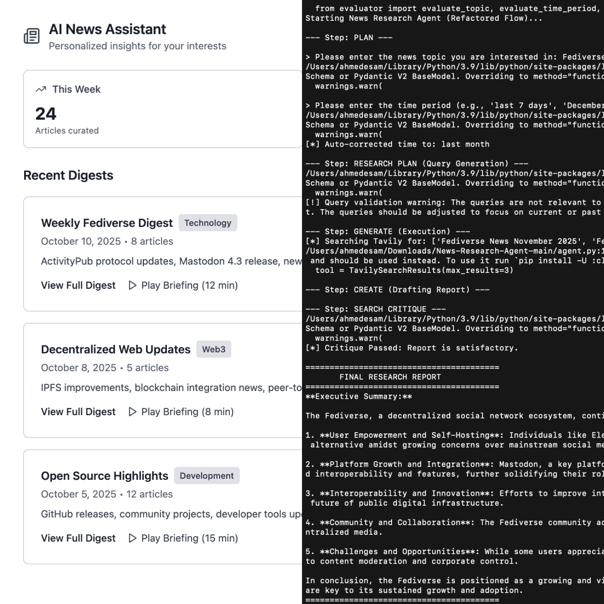

Implementing Subscription Features with Stripe
Delivering a scalable subscription and billing system for a SaaS product with Stripe integration.
Overview
The moment the product entered its monetization phase. The real challenge was operationalizing product rules into a billing system that users could trust and the business could run reliably at scale.
I led the initiative end to end—framing the monetization approach, evaluating payment solutions, defining the technical direction, and aligning stakeholders around a secure, scalable execution.
Problem
We needed to launch subscriptions fast without increasing security, compliance, or operational risk.
Key Question
How can we introduce a billing system that customers trust, without turning billing into a long-term engineering and compliance burden?
Answer (TL;DR)
We used Stripe to handle payments, invoicing, taxes, and retries, while keeping product-specific logic—usage rules, entitlements, and billing UX—within the core product.
Goals
- Launch subscriptions with monthly and yearly plans, including free trials
- Support usage-based pricing in a clear and predictable way
- Automate invoices, taxes, refunds, and retries
- Minimize PCI and regulatory exposure
Success Criteria
- Subscriptions live end to end with measurable conversion
- ≥99.9% reliable processing of billing events
- Reduced billing-related support escalations
- No raw payment data stored or processed internally
My Role
Product Manager
I owned the end-to-end billing strategy, challenged build-vs-buy assumptions, defined the integration approach, and drove execution from discovery through production launch.
Responsibilities
- Defined requirements and acceptance criteria
- Modeled usage and billing rules
- Led the build-vs-buy evaluation and integration scope
- Coordinated engineering, design, finance, and legal
- Oversaw QA and launch readiness
Discovery
I explored a core question early on: should we build billing in-house, or rely on a payment gateway? To guide this exploration, I defined clear decision criteria up front—regulatory compliance, scalability, long-term cost, and operational risk—rather than optimizing for short-term features.
Two paths emerged:
- In-house billing: full ownership of payments, including engineering effort, PCI responsibility, security exposure, and ongoing regulatory and maintenance costs.
- Payment gateway integration: delegating payment complexity to a specialized platform with mature subscription support, global reach, and built-in compliance.
I realized we shouldn’t build billing in-house, integrating with a payment gateway lets the team focus on product value, not financial infrastructure.
Technical Strategy & Integration Scope
Based on this framing, I defined a provider-agnostic integration strategy designed to work with any mature payment gateway:
- Treat the payment platform as the system of record for billing state
- Use tokenized checkout flows to minimize PCI exposure
- Rely on webhooks as the source of truth for payment events
- Keep internal systems focused on product-specific logic such as usage tracking, entitlements, and access control
Regulatory Compliance & Security
Compliance considerations strongly favored a gateway-based approach:
- Avoiding direct handling of card data dramatically reduced PCI scope
- Alignment with GDPR and regional regulations reduced legal and operational risk
- Event-driven billing enabled auditable, traceable financial flows
This separation preserved flexibility in vendor choice while keeping the architecture clean, resilient, and scalable.
Market Research: Payment Gateways Comparison
To evaluate the gateway option, I compared leading payment providers, with the goal of minimizing long-term compliance risk while enabling international scale with minimal operational overhead.
Payment Methods
While several providers offer broad payment-method coverage, Stripe consistently matches or exceeds competitors across cards, wallets, ACH, and local methods—making it a strong default for international SaaS products without requiring multiple integrations.

Payment Options
Stripe stands out for combining advanced billing capabilities with a consistent, developer-first API. While some providers excel in niche scenarios, Stripe offers the most balanced option set for subscription-driven products.

Coverage
Although PayPal and 2Checkout lead in raw country count, Stripe’s currency support and regional compliance depth make it better suited for scalable, multi-market SaaS expansion through a single integration.

After comparing providers against our compliance, scalability, and coverage criteria, we made a confident decision to move forward with Stripe as the payment platform.
What Stripe Handles
- Payment processing and payment method storage
- Subscription lifecycle (creation, renewal, cancellation)
- Invoicing, proration, retries, and failed payment handling
- Tax calculation, compliance, and regulatory updates
- Webhook events for all billing state changes
What We Handle
- Product-specific billing logic (usage calculation, access control)
- Defining what is billable and when charges should apply
- Interpreting Stripe events and syncing them with product state
- Billing UX: plan changes, billing status, and error messaging
Stakeholder Considerations
Choosing a payment gateway over an in-house solution introduced a shared set of priorities:
- Clear ownership boundaries between payment infrastructure and product logic
- Reduced operational and compliance burden through automation
- Reliable, auditable billing flows that scale with the product
- Predictable billing states and failure handling to maintain customer trust
With stakeholder priorities aligned, we translated those needs into a focused 6-week roadmap that sequenced integrations, product logic, and validation.
Roadmap

Impact & Outcome
This work resulted in:
- Delivered the full billing engine in 6 weeks—a ~70% reduction compared to the original 5-month in-house build estimate.
- Reduced manual billing adjustments and invoice corrections by ~85%.
- Reallocated 3 full-time engineers to core product features within two weeks of Stripe go-live.
- Achieved 99.98% webhook delivery success, ensuring user entitlements remained accurately synchronized with payment status.
Key Learnings
- Build-vs-buy decisions are strategic, not just technical.
- Early clarity on ownership boundaries prevents future complexity.
- Event-driven integrations scale more reliably and remain resilient under change.
The best product decisions don’t just solve today’s problem—they simplify every decision that follows.
Read more of my case studies
AT Protocol (Bluesky) Integration
AT Protocol integration feasibility and product strategy to future-proof Clip Symphony and expand decentralized content distribution.
Ninja — Grocery Delivery Experience Redesign
Improving clarity, communication, and confidence in a grocery delivery experience.

Personalized AI News Assistant
An AI-driven product concept that helps users cut through news overload with personalized summaries and context.
Get in touch at
ahmedesam3ab@gmail.com